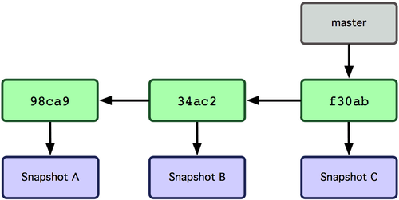

Git y GitHub
Social Coding
Creado por Santiago Chío Benavides
Instalando todo
Página Git oficialGitHub
Opcional GitHub cliente GUIGit
Es un sistema de control de versiones.
Mantiene y guarda estados de un projecto.
Linus Torvalds
Estructura proyecto en Git

Git es independiente
La mayoría de las operaciones en Git sólo necesitan archivos y recursos locales para operar.
Configuración
Abrir Git Bash
GitHub

¿Qué es GitHub?
Servicio para mantener, publicar y compartir código.
Red social para programadores.
Areas principales

Git workflow
- Modificas archivos en tu directorio
- Especificas los archivos que se guardarán
- Haces un commit, que toma los archivos del staging area y guarda una "fotografía" en la carpeta .git
Comandos básicos

Ramas y exploración

Todas las ramas son un apuntador hacia un commit
Así quedaría el repositorio

¿Cómo sabe git en cuál rama estamos?

Después de git checkout testing

Hacer un nuevo commit en testing

Regresar a la rama master con git checkout master

Hacer un nuevo commit en master